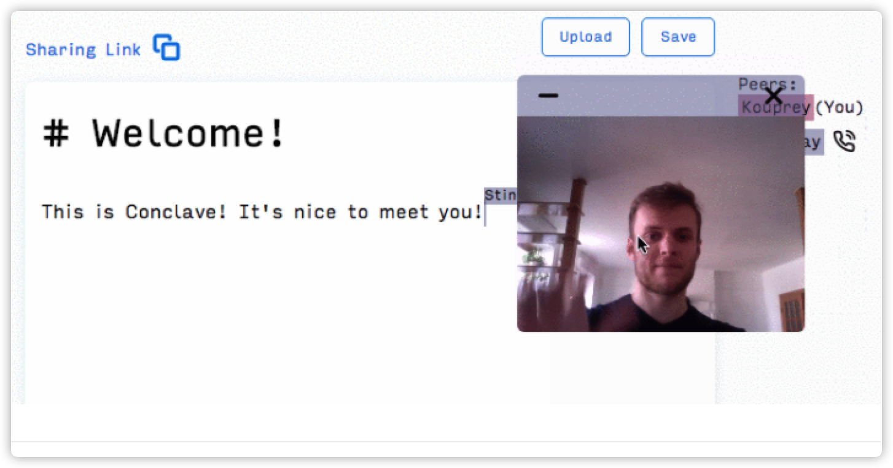

CRDT协议基础知识(4) - 实例研究

Conclave is a peer-to-peer, real-time, collaborative text editor built from scratch in JavaScript.

What is a text editor?
A text editor is a space where you can insert or delete text characters and then save the resulting text to a file. Each character has a value and a numerical index that determines its position in the document.
一个文本编辑器，实质是一个数据模型，可以采用各种合适的数据结构进行描述，例如树结构。
What is a real-time collaborative text editor?
可以由多个用户进行实时同步编辑的文档。 多个用户的操作需要具有如下属性：
- Commutativity（可交换性） occurs when operations applied in different orders produce the same result. （例如，加法满足可交换性，减法不满足）
- Idempotency（幂等性） occurs when repeated operations produce the same result. （例如，乘1操作)
When users make concurrent edits to a shared document, the insert and delete operations must commute and the delete operations must be idempotent.
相关技术
OT
OT was the first popular way （第一种尝试） to allow for collaborative editing. The first collaborative editors, Google Wave, Etherpad, and Firepad, all used OT. OT is implemented without changing the fundamental structure of a basic text editor. Like a basic editor, OT treats each character as having a value and an absolute position. And to achieve the commutativity and idempotency required by a collaborative text editor, OT relies primarily on an algorithm.（OT技术不改变文本编辑器的数据模型，仅仅依靠算法来保证协同编辑需要的操作属性）
然而OT的实现复杂度极高，正如以下所言：
“Unfortunately, implementing OT sucks. There’s a million algorithms with different tradeoffs, mostly trapped in academic papers. The algorithms are really hard and time consuming to implement correctly. […] Wave took 2 years to write and if we rewrote it today, it would take almost as long to write a second time.” — Joseph Gentle (Google Wave / ShareJS Engineer)
CRDT
Researchers set out to change the underlying data structure of the text editor. Instead, properties are added to each character object that enabled commutativity and idempotency. Using a more complex data structure allows for a much simpler algorithm than OT. （CRDT研究者，对文本编辑的数据模型进行的增强，对其中的数据元素进行扩展，使其满足协同编辑需要的操作属性，从而简化了算法）
注意： CRDT有很多类型，根据不同的数据模型特点，采用相应的CRDT。 在文本编辑器中，由于需要保证字符之间具有一定的次序，多采用的CRDT属于 sequence CRDT。 在协同文本编辑器场景下，需要对数据模型进行如下扩展：
- Globally Unique Characters(字符对象全局唯一标识)
- Each character object must be globally unique(每个字符对象必须全局唯一）. This is achieved by assigning Site ID and Site Counter properties whenever a new character is inserted. Since the Site Counter at each site increments whenever inserting or deleting a character, we ensure the global uniqueness of all characters.With globally unique characters, when a user sends a message to another user to delete a character, it can indicate precisely which character to delete. By ensuring globally unique character objects, we’ve achieved idempotency of delete operations.（通过全局唯一的字符标识， 所有的参与者都可以精确的定位到需要操作的字符对象, 从而实现了删除操作的幂等性， 如图所示）

-
Globally Ordered Characters（字符对象全局定序）
- CRDT has to do with the positioning of characters. We need all the characters to be globally ordered and consistent. That means that when a user inserts a character, it will be placed in the same position on every user’s copy of the shared document.（需要确保所有用户在数据模型中的同一位置进行操作）
- 方法一： To ensure commutativity by using fractional indices as opposed to numerical indices. We represent fractional indices in code as a list of integers (or position identifiers). For example, O.5 is represented as [0, 5]. (通过采用区间位置，而非数值位置，来保证字符对象操作的可交换性)

- 方法二： Another way to imagine fractional indices is as a tree（基于树的定序）. As characters are inserted into the document, they can be inserted in between two existing position identifiers at one level of the tree. However, if there is no space between two existing character positions, as demonstrated below, we proceed to the next level of the tree and pick an available position value from there. （相关的算法有： LSEQ)
CRDT 开发
编辑区域
采用CodeMirror实现文本编辑， 可以方便的识别字符的插入和删除操作。
CRDT实现
数据结构
class CRDT {
constructor(id) {
this.siteId = id; // 客户UUID
this.struct = []; // 字符对象集合
}
}
基本操作
- Local Insert: User inserts character into their local text editor and sends the operation to all other users. （客户在本地编辑器中插入字符，并将该操作发送给其他客户）
- Local Delete: User deletes character from their local editor and sends the operation to all other users. （客户在本地编辑器删除字符，并将该操作发送给其他客户）
- Remote Insert: User receives a insert operation from another user and inserts it to their local editor. （客户收到其他客户的插入字符操作， 将该字符对象插入到本地编辑器）
- Remote Delete: User receives a delete operation from another user and deletes it from their local editor. （客户收到其他客户的删除字符操作， 将该字符对象在本地编辑器中进行删除）
消息分发
Our local operations would get sent to our relay server （本地操作会发送给中继服务器）, which would then broadcast them out to all the other users （中继服务器会将本地操作消息发送给其他相关用户）. Those users would incorporate the changes and any conflicts would be seamlessly resolved due to the commutative and idempotent nature of CRDTs.

Limitations of a Central Relay Server
- 缺点1： The first limitation is that we currently have an unnecessarily high latency between users. （所有操作均经过中心服务器转发， 导致了位置不明感的不必要的延迟， 不能满足实时性要求）
- 缺点2： The second limitation is that a central server can be costly to scale. (中心服务器模型，不利于弹性扩展，随着用户量的动态增加，扩展成本将急速上升)
- 缺点3： The third limitation is that the client-server model requires that users trust the server and anyone that has access to it with their data. （中心服务器模型导致用户需要信任服务器，不利于用户隐私保护）
- 缺点4： a central server creates a single point-of-failure. (中心服务器模式，带来了固有的单点故障问题)
Peer-to-Peer Architecture
We can remove these limitations by switching to a peer-to-peer architecture where users send operations directly to each other. To allow nodes to send and receive messages, we used a technology called WebRTC.
WebRTC 技术
基本原理
WebRTC （基本原理） is a protocol that was designed for real-time communication over peer-to-peer connections. While WebRTC enables our users to talk directly to one another, a small server is required to initiate those peer-to-peer connections in a process called “signaling”. When a user first opens Conclave, the application establishes a WebSocket connection with the server. Using that connection, the app “registers” with the signaling server, essentially letting it know where it’s located. The server responds by assigning a random, unique Peer ID to the user. The application then uses the assigned Peer ID to create a Sharing Link to display to each user. （用户初次登陆系统时，首先与信号服务器建立websocket连接， 进行注册， 信号服务器会返回一个与用户位置有关的标识ID)

The link is unique to each user and is essentially a pointer to a particular user. A user can share their link with anyone, and upon clicking the link, the collaborator will automatically be connected to the user and able to collaborate on the shared document. (用户的标识链接是与用户一对一绑定的，并可以分享给其他用户， 基于此链接可以进行P2P通信, 相关技术可以参考PeerJS)

WebRTC uses the UDP transport protocol. UDP is a lightweight message protocol that allows it to send messages quickly and without waiting for a response from the other user. One drawback to UDP is that it does not guarantee in-order packet delivery. That means that our messages may be received in a different order than they were sent. (WebRTC技术基于UDP进行消息传送， 不能保证消息的顺序性)
Version Vector技术
To solve the out-of-order messages problem, we built what’s called a Version Vector （类似于TCP中的分片重组技术）.
Whenever an operation is sent out, in addition to the character object and whether it’s an insertion or deletion, we also include the character’s Site ID and Site Counter value. The SiteID indicates who originally sent the operation, and the Counter indicates which operation number it is from that particular user. （分片的标识信息包括： 客户Site ID, 客户时钟 Site Counter。） When a peer receives a delete operation, it’s immediately placed in a Deletion Buffer. If it were an insert, we could just apply it immediately. But with deletes, we have to make sure the character has been inserted first. （对于需要删除的字符对象，需要进行分片缓冲，重新定序后才可以执行删除操作）
Conclave 系统架构
Within every instance of our application, a custom-built CRDT works together with a Version Vector to make sure our document replicas all converge. The Messenger is responsible for sending and receiving WebRTC messages. And of course, the Editor allows a user to interact with their local copy of the shared document. （参见下图）

优化思路
数据模型的选择
- 操作对象的粒度（字符 ==> 单元格）
- 操作对象的定位（一维数组线性表 ==> 二维数组‘row, column’）
消息分发管理
- 子网的定义（以共享实体为中心， 对参与进行分组， 实现基于群组的子网管理）
- 物理网络 ==> 社交网
- 文档子网 ==> 数据一致性
- 群组子网 ==> 消息广播域
- 子网管理
- 网络规模的管理（每个用户都是一个交换机， 有其来决策其可以连接的用户数量，广播域大小）
- 网络流量负载均衡问题（SDN问题）
用户体验优化
Without a way to identify another person on the page, users would end up writing over each other and turning the real-time collaboration experience into a headache. （提供远程光标、连接状态、视频窗口管理等交互组件）